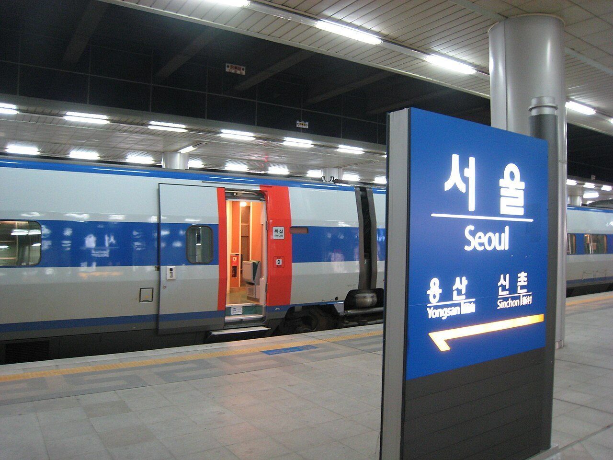
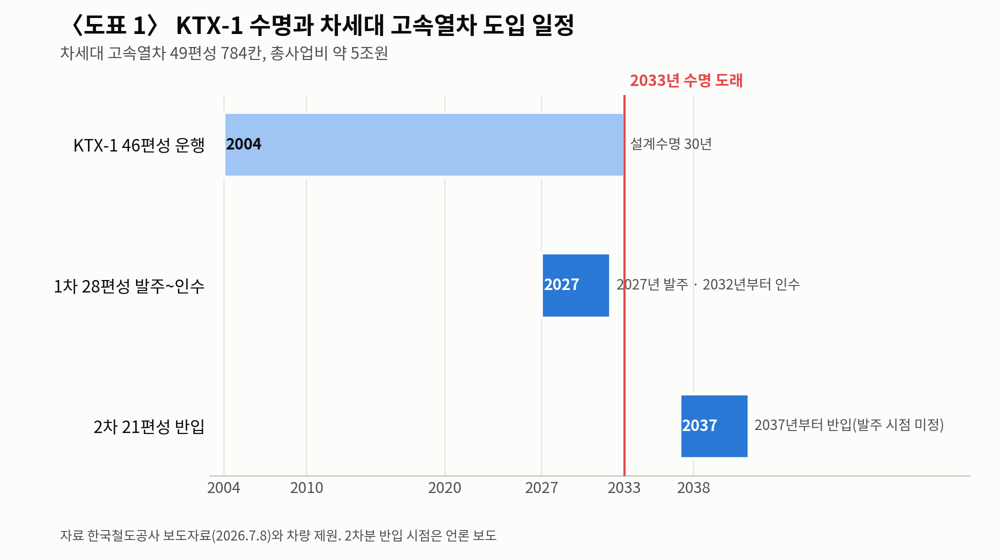
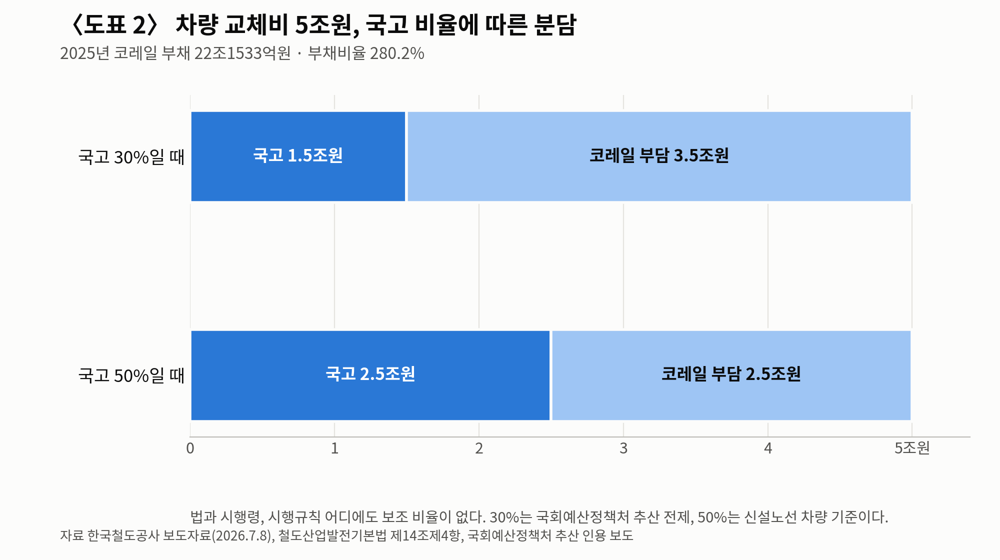

[철도] KTX-1 46편성 수명 2033년, 발주 시한은 2027년
차세대 고속열차 49편성 784칸 예비타당성조사 통과, 1차 28편성 내년 발주
노후차량 교체 국고 보조 조항은 생겼는데 지원 비율은 비어 있다
운임은 9월 1일 평균 10% 내렸다, 부채는 22조원
경세제민 AI·경제 연구소 김갑봉 박사│2004년 4월 1일 달리기 시작한 KTX-1은 46편성이다. 설계수명은 30년이어서 2033년부터 수명이 찬다. 새 차를 받으려면 발주부터 인수까지 7년이 걸린다.

1. 2027년에 발주해야 2033년을 넘긴다
한국철도공사는 2026년 9월 17일 대한교통학회 제95회 학술발표회에서 기관세션을 열었다. 주제는 「스마트 철도의 대전환」이고, 차세대 고속차량 발표는 박한균 선임연구원이 맡았다.
계산은 단순하다. 2033년에 KTX-1이 수명에 닿는데 차량 한 편성을 설계하고 만들고 시운전해 넘겨받는 데 7년이 든다. 그래서 2027년이 1차 발주 시한이 된다. 시한을 놓치면 2033년에 빈자리가 생긴다.
KTX-1은 1편성에 955석이고 영업최고속도는 시속 300㎞다. 코레일 차량제원표에 내구연한 30년이 적혀 있다. 코레일 자료를 인용한 2025년 보도를 보면 고속열차 1316량 가운데 920량이 KTX-1이다. 고속차량 열 량 가운데 일곱 량이 스무 해를 넘긴 차다.
고장은 이미 숫자로 나와 있다. 국회에 제출된 코레일 자료를 보면 2021년 1월부터 2026년 6월까지 운행장애 559건 가운데 차량고장이 300건으로 53.7%였다. 차종별로는 KTX-1이 70건으로 가장 많았다.


2. 예타는 통과했다, 49편성 784칸
사업은 이미 문턱을 넘었다. 코레일은 2026년 7월 8일 차세대 고속열차 도입 사업이 재정경제부의 공공기관 예비타당성조사를 통과했다고 밝혔다. 규모는 동력분산식 49편성 784칸이고 총사업비는 약 5조원이다. 1편성 좌석은 약 1000석으로 KTX-1보다 45석 많고 최고속도는 시속 320㎞다.
앞서 알려진 구상은 이보다 컸다. 지난 4월 보도에 실린 코레일 안은 51편성에 약 5조1000억원이었다. 확정된 규모는 49편성에 약 5조원이다.
차량에는 상태기반 유지보수 체계와 탈선 감지 장치, 영구자석형 동기전동기가 들어간다. 발주는 두 번으로 나뉜다. 1차 28편성을 2027년에 발주해 2032년부터 순차로 넘겨받고, 2차 21편성은 2037년부터 반입한다.
더 빠른 차도 이미 움직였다. 코레일은 2032년에 국가연구개발로 개발 중인 시속 370㎞급 EMU-370 1편성을 받는다. 코레일과 현대로템은 9월 15일 창원공장에서 이 차량의 사업착수 회의를 열었다. 설계최고속도는 시속 400㎞이고, 지능형 에너지절감 열차자동제어장치를 처음 넣는다.
김태승 코레일 사장은 차세대 KTX를 「대한민국 고속철도의 기준을 다시 세우기 위한 국가 인프라의 핵심 투자 사업」이라고 밝혔다.
3. 보조 근거는 생겼는데 비율이 없다
돈을 대는 규칙은 지난해 바뀌었다. 철도산업발전기본법 제14조에 4항이 신설돼 2026년 6월 3일 시행됐다. 조문은 이렇다. 「국가는 철도이용자의 안전을 위하여 철도운영자가 국토교통부령으로 정하는 노후화된 철도차량을 교체하는 경우 필요한 소요자금의 일부를 보조할 수 있다.」
시행규칙은 노후차량의 범위를 정했다. 고속철도차량은 정밀안전진단 기간이 끝난 다음 날부터 10년이 지나면 노후차량이 된다. 그런데 법에도 시행령에도 시행규칙에도 국가가 얼마를 대는지 적혀 있지 않다.
빠진 것은 비율이다.
거론되는 수치는 둘이다. 국회예산정책처는 지난해 9월 도시철도에 준해 국비 30%를 적용하면 1차 28편성 2조8139억원 가운데 8442억원이 국고 몫이라고 추산했다. 김태승 사장은 올해 5월 기자간담회에서 신설 노선 차량 구입비의 절반을 대는 현행 제도를 들었다.
비율은 없어도 첫 국비는 붙었다. 2027년 정부 예산안에 차세대 고속열차 1차년도 사업비 87억원이 잡혔다. 같은 예산안에서 철도 사회간접자본 전체는 8조3679억원으로 올해보다 5817억원 줄었다.
부채로 메울 때의 셈은 지난해 국회에서 나왔다. 2025년 2월 11일 국회 토론회에서 이진우 카이스트 교수가 추정치를 냈다. 대체차량을 부채로 들이면 2040년 코레일 부채비율이 최소 386.2%에서 최대 402.3%에 이른다는 계산이다. 코레일이 공시한 중장기 계획은 2029년 138.9%를 목표로 잡고 있다.
4. 운임은 9월 1일 평균 10% 내렸다
재무는 이미 눌려 있다. 2025년 코레일 부채는 22조1533억원이고 부채비율은 280.2%다. 영업손실은 3524억원, 총차입금은 16조3458억원이다. 매출은 7조3170억원으로 6.6% 늘었는데 영업비용이 10.7% 늘어 손실이 커졌다.
운임은 오래 묶여 있었다. 김태승 사장은 올해 5월 「지난 15년간 요금이 한 번도 오르지 않아」 재무 압박이 크다고 했다. 그런데 2026년 9월 1일 운임은 오히려 내려갔다. 코레일과 에스알이 통합하면서 KTX 운임이 평균 10% 내렸고, 서울~부산 일반실은 5만9800원에서 5만4400원이 됐다.
국토교통부와 공정거래위원회는 8월 3일 통합을 승인하며 3년 동안 KTX 운임을 SRT 수준으로 맞춘다고 밝혔다. 좌석은 주중 하루 1만5679석, 주말 1만7655석 늘었다. 주말 운행 횟수도 26회 붙었다.
부채는 22조원이고 차량 교체에는 5조원이 든다. 운임은 내려갔고 국고 지원 비율은 아직 없다.
5. 역은 바뀌는데 화물은 반토막
기관세션의 다른 축은 역이었다. 코레일은 2023년 11월 KTX 광명역에서 로봇 역무원 두 대를 한 달 동안 시범 운영했다. 승차권 QR를 읽어 길을 안내하고 짐을 옮기는 일을 맡겼다.
2026년 2월에는 서울역과 시흥철도차량정비단에서 5세대 이동통신 특화망 실증을 마쳤다. 한국지능정보사회진흥원 공모사업으로 돌린 몫이고, 코레일 자체 실증은 올해 11월까지 이어진다. 폐쇄회로텔레비전 영상을 인공지능이 분석해 혼잡을 읽고 안내로봇을 보내는 방식이다.
개찰구도 바뀐다. 서울 우이신설선은 2023년 9월 6일 태그리스 결제를 열었다.
화물은 반대로 갔다. 국가물류통합정보센터 통계로 철도화물 수송량은 2015년 3709만톤이었다. 코레일 품목별 집계로 2025년은 약 1798만톤이다. 10년 만에 절반 아래로 내려갔다.
정부 계획과 견주면 더 벌어진다. 제2차 철도물류산업 육성계획은 2026년 5000만톤을 목표로 걸었는데, 목표 연도를 앞둔 실적은 그 36% 수준이다.
김태승 사장은 인하대 아태물류학부 교수 출신으로 2026년 3월 3일 취임했다. 취임사에서 그는 책임 추궁보다 원인 규명을 앞세우는 안전문화를 최우선 과제로 들고, 조직 통합을 하나의 팀으로 마무리하겠다고 했다.
2033년까지 7년이 남았고 발주 시한까지는 1년 남짓이다. 국고가 얼마를 댈지는 아직 비어 있다.
참고문헌
· 「철도산업발전기본법」 제14조제4항(2025.12.2 신설, 법률 제21187호, 2026.6.3 시행), 국가법령정보센터, https://www.law.go.kr/DRF/lawService.do?OC=test&target=law&MST=280127&JO=001400&type=XML
· 「철도산업발전기본법 시행규칙」 제2조의2(노후 철도차량의 범위), 국토교통부령 제1594호, 2026.6.2 공포·2026.6.3 시행, https://www.law.go.kr/DRF/lawService.do?OC=test&target=law&MST=286667&type=XML
· 「철도산업발전기본법 시행령」 전문(보조 비율 조항 없음 확인), https://www.law.go.kr/DRF/lawService.do?OC=test&target=law&LM=철도산업발전기본법 시행령&type=XML
· 한국철도공사 기관세션 「스마트 철도의 대전환」, 대한교통학회 제95회 학술발표회, 강릉컨벤션센터, 2026.9.17, 발표 박한균 선임연구원
· 한국철도공사, 「코레일 '차세대 고속열차(EMU-320) 도입 사업' 예타 통과」 보도자료, 2026.7.8, https://info.korail.com/info/selectBbsNttView.do?bbsNo=199&key=911&nttNo=27002
· 한국철도공사, 「코레일, 국내 최고속도 'EMU-370' 고속열차 사업 본격 추진」 보도자료, 2026.9.16, https://info.korail.com/info/selectBbsNttList.do?bbsNo=199&key=911
· 한국철도공사, 차량 제원(KTX-1), https://info.korail.com/info/contents.do?key=1503
· 한국철도공사, 「KTX 광명역에 로봇 역무원 떴다」 보도자료, 2023.11.1, https://info.korail.com/info/selectBbsNttView.do?key=911&bbsNo=199&nttNo=20111
· 한국철도공사, 물류 수송현황(품목별), https://info.korail.com/info/contents.do?key=871
· 국가물류통합정보센터, 철도화물 수송실적, https://www.nlic.go.kr/nlic/frghtRail0010.action
· 국토교통부·공정거래위원회, 「코레일·SR 기업결합 최종 승인」, 2026.8.3, https://www.korea.kr/news/policyNewsView.do?newsId=148969267
· 국토교통부, 「코레일-에스알 9월 1일 하나로」 보도자료, 2026.8.31, https://www.korea.kr/news/policyNewsView.do?newsId=148970889
· 국토교통부, 「제2차 철도물류산업 육성계획」, 2023.4.6, https://www.korea.kr/news/policyNewsView.do?newsId=148913576
· 서울특별시, 우이신설선 태그리스 결제 개통, 2023.9.6, https://news.seoul.go.kr/traffic/archives/510025
· 헤럴드경제, 황희 의원실 확보 한국철도공사 철도사고·운행장애 자료 보도, 2026.7.31, https://biz.heraldcorp.com/article/10827194
· 파이낸셜뉴스, KTX-1 노후화와 차량 보유 현황 보도, 2025.5.9, https://www.fnnews.com/news/202505091549537082
· 철도경제신문, 차세대 고속열차 도입 구상(51편성) 보도, 2026.4.8, https://www.redaily.co.kr/news/articleView.html?idxno=16135
· 철도경제신문, 2027년 정부 예산안 철도 사회간접자본 보도, 2026.9, https://www.redaily.co.kr/news/articleView.html?idxno=17466
· 뉴시스, 차세대 고속열차 예타 통과 보도, 2026.7.8, https://www.newsis.com/view/NISX20260708_0003700940
· 다음뉴스, 국회예산정책처 차세대 고속열차 국비 분담 추산 보도, 2025.9.30, https://v.daum.net/v/20250930105012205
· 이데일리, 김태승 코레일 사장 기자간담회 보도, 2026.5.14, https://www.edaily.co.kr/News/Read?mediaCodeNo=257&newsId=01630166645449904
· 서울신문, 코레일 2025년 재무와 운임 동결 보도, 2026.5.17, https://www.seoul.co.kr/news/economy/2026/05/17/20260517500090
· 뉴스핌, 한국철도공사 2025년 결산과 중장기재무관리계획 보도, 2026.5.8, https://www.newspim.com/news/view/20260508001119
· 한국경제, 고속철도 통합과 운임 인하 보도, 2026.8.31, https://www.hankyung.com/article/2026083145861
· 아시아경제, 서울역·시흥철도차량정비단 5세대 이동통신 특화망 실증 보도, 2026.2.10, https://view.asiae.co.kr/article/2026021010480855941
· 전기신문, 국회 토론회 「KTX 기대수명 도래에 따른 대체차량 도입과 정부역할 방안 모색」 보도, 2025.2.13, https://www.electimes.com/news/articleView.html?idxno=350258
· 경향신문, 김태승 코레일 사장 취임 보도, 2026.3.3, https://www.khan.co.kr/article/202603031410001
사진 출처
· [대표사진] Syced, "KTX in Seoul.jpg", 위키미디어 공용, CC0, https://commons.wikimedia.org/wiki/File:KTX_in_Seoul.jpg
※ 이 기사는 인공지능을 활용해 작성했습니다.
관련기사
- 개통 127년 한국철도, 골격은 선진국 절반… "6000km로 다시 그릴 때"
- [주식공부] 코스피 12.13% 하락, 자사주 끊긴 자리에 선 개인
- 노후계획도시 선도지구, 분담금은 용적률 두 구간에서 갈린다
- [UAM] 상용화 목표는 2025년이었다, 지금은 2028년
저작권자 © AI경세제민 무단전재 및 재배포, AI학습 및 활용 금지